Class 3 Lecture: Climate as a System: Making the Invisible Visible
PUFY 1100 A31 Sustainable Systems 12953
Climate as a System
- How can we understand — and communicate — a system operating across planetary space and time?
Representation Changes Relationships
How does representation change relationships?
To understand a system, we first have to be able to see its relationships.
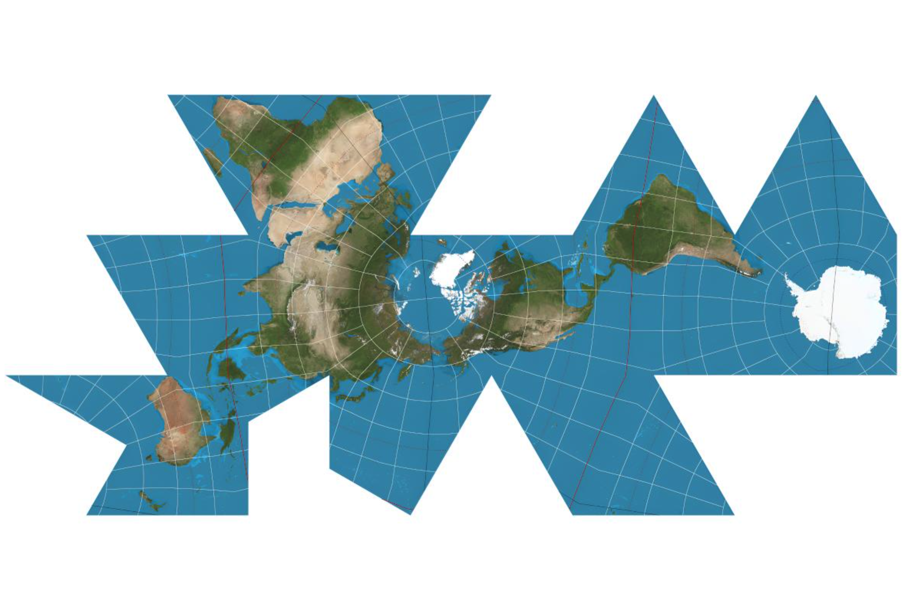
Systems Require Multiple Ways of Seeing
| SCALE | TIME | CONNECTION |
|---|---|---|
| Powers of Ten | Spiral Jetty | Energy Vector |
| What becomes visible when scale changes? | What becomes visible when the temporal frame changes? | What becomes visible when separate places are connected? |
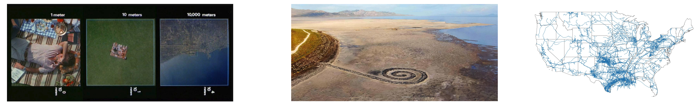
The Energy System is Inside the Climate System
- NYC → Infrastructure → Energy → Atmosphere → Earth System
- Question: at what scale/consequence does an energy system end?
- Answer: The consequences enter planetary systems.
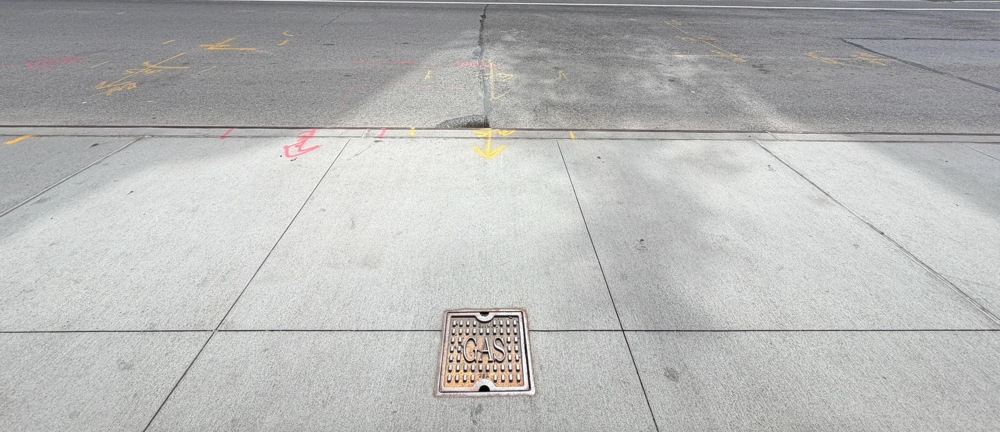
Mika Kim - Gas Infrastructure Assignment 2
CLIMATE ≠ WEATHER
- Events versus patterns
- Climate becomes perceptible through patterns across space + time.
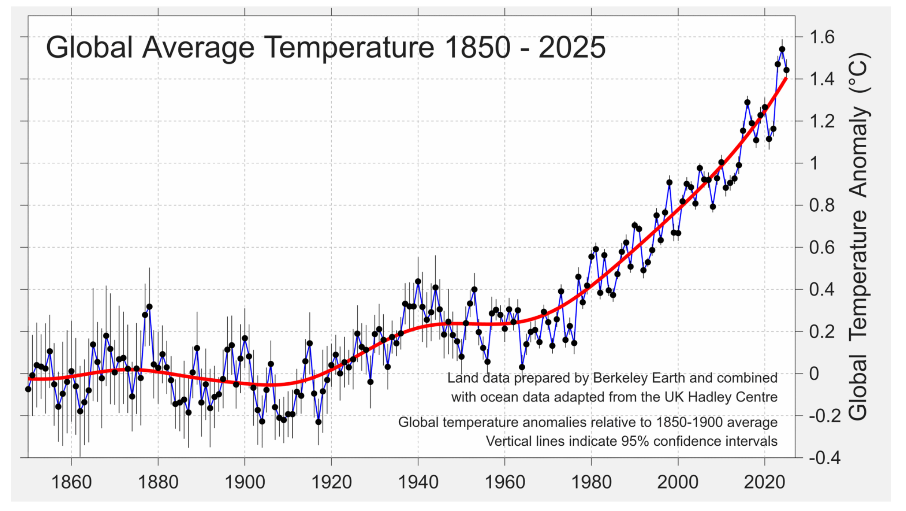
Earth System
Atmosphere / ocean / land / ice / biosphere
Climate isn’t an object. It is an emergent condition produced by interacting systems.
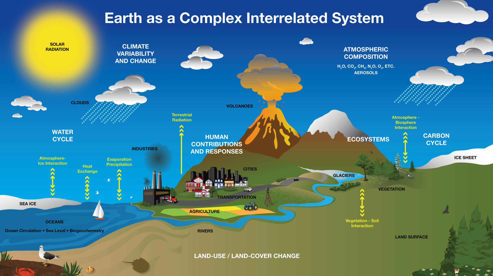
Energy Balance
Sun → Earth → Space
Fundamental Energy System: Incoming solar radiation > reflection + absorption > outgoing infrared.
Greenhouse Effect
- Atmosphere + outgoing energy
- Greenhouse gases alter the movement of energy through the system.

Carbon Cycle
Atmosphere ↔︎ Ocean ↔︎ Biosphere ↔︎ Geology
Stocks + Flows. Carbon isn’t inherently the problem; its location and movement matter.
A Stock is carbon stored somewhere; a Flow is carbon moving from one stock to another.

Fossil Energy
- Geological carbon → Extraction → Combustion → Atmosphere
- TIME: carbon accumulated/stored across geological time is mobilized extraordinarily quickly in industrial time.
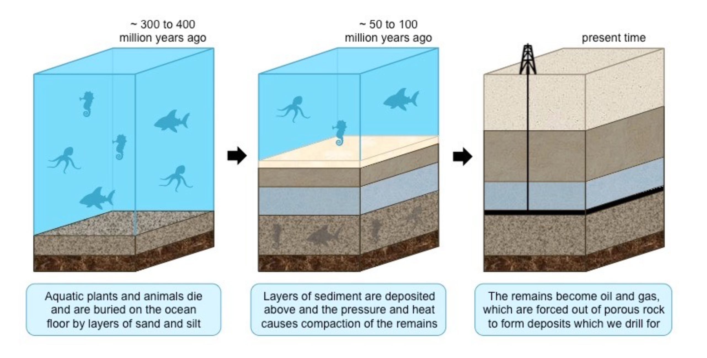
Fossil Energy
- Geological carbon → Extraction → Combustion → Atmosphere
- TIME: carbon accumulated/stored across geological time is mobilized extraordinarily quickly in industrial time.
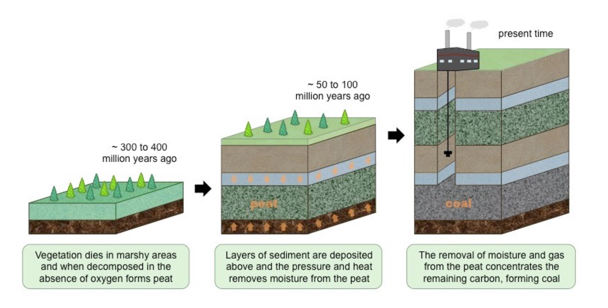
Accumulation
- Emissions vs atmospheric concentration
- Crucial systems distinction: emissions = flow; atmospheric CO₂ = accumulating stock.
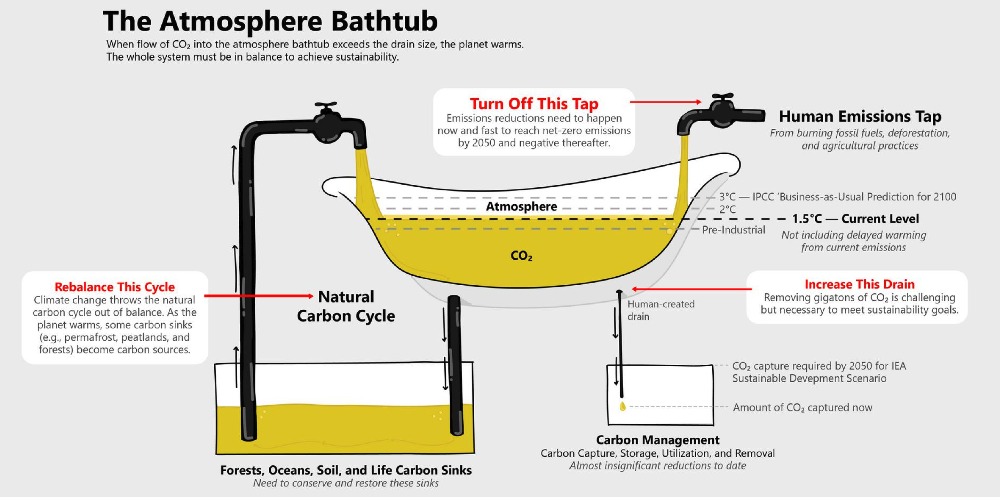
Different Clocks
- Time: geological → centuries → decades → seasons → seconds
- Climate combines radically different temporal scales (think Sprial Jetty | Underland)
INDUSTRIAL TIME: we ‘operationize’ geological carbon in ~250 years.
EARTH-SYSTEM TIME: The carbon we ‘operationize’ in short centuries can alter the Earth system for tens to hundreds of thousands of years.
Feedbacks
- A change in one part of a system produces effects that feed back into the original change.
- Climate doesn’t simply respond; parts of the system can amplify change elsewhere.
- Example: Ice–albedo (Surface Reflectance)
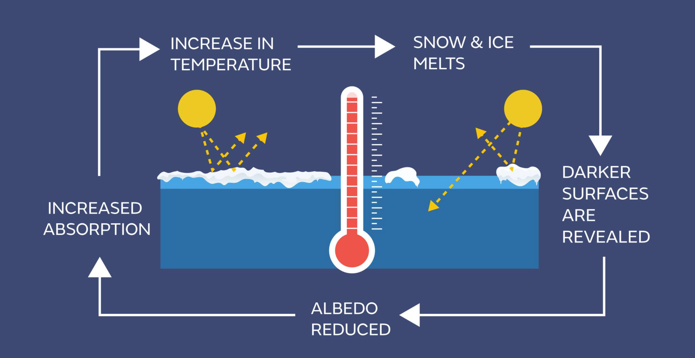
Tipping Points
- Stable → Threshold → Altered State
- A system can reach a point where small additional changes produce disproportionately large consequences.
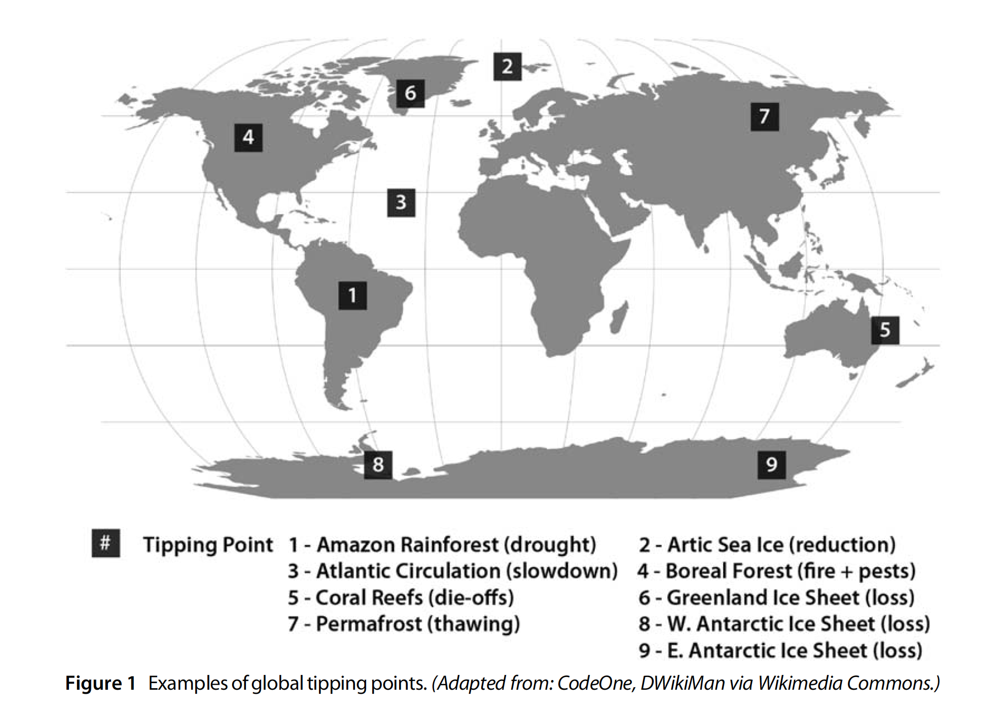
Hothouse Earth
Warming can change the behavior of the Earth system itself.
Interacting feedbacks and tipping points could push Earth toward a new, much warmer state.
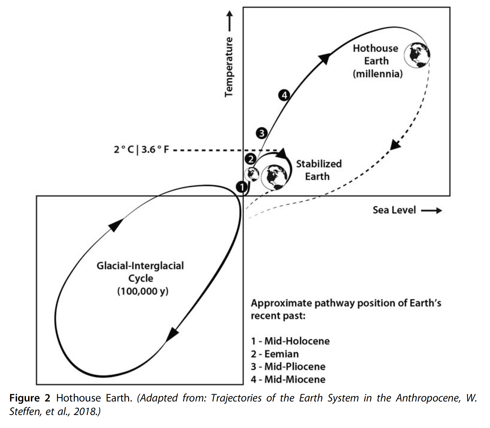
Energy → Crisis
Climate Crisis, Energy Violence
- Climate change is inseparable from energy systems.
- Since the 1800s human activities have been the main driver of climate change.
- New investment and activity in fossil fuel extraction continues apace; indeed, it is intensifying across particular fuels, notably oil and gas.
- Expensive fossil fuel infrastructure represents sunk costs, deterring investment in renewables.
The Problem of Perception
| PHENOMENON | PERCEPTION PROBLEM |
|---|---|
| ATMOSPHERE | TOO LARGE — planetary scale |
| CARBON | INVISIBLE — gases and flows can’t ordinarily be seen |
| FEEDBACK | INTERCONNECTED — causal relationships occur between multiple processes |
| GEOLOGICAL TIME | TOO SLOW — exceeds direct human experience |
Climate must be constructed visually
Alexander von Humboldt — Isothermal Lines, 1817
Separate measurements become a spatial relationship.
A representational invention that makes a climatic relationship visible.
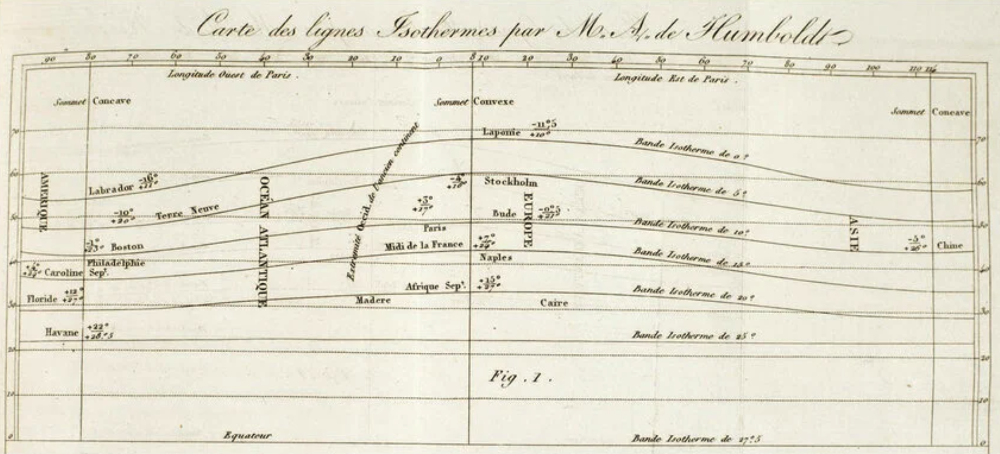
Climate must be constructed visually
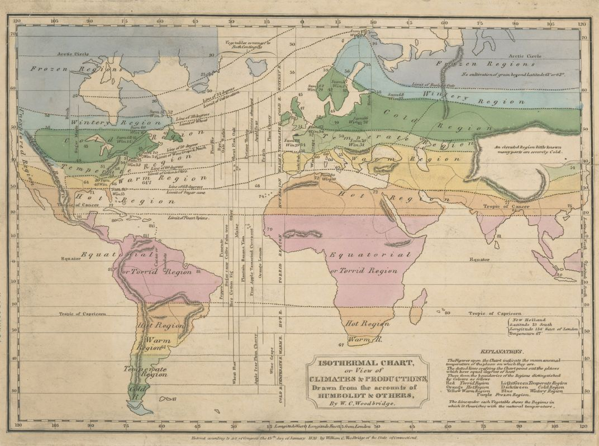
Keeling Curve
Charles David Keeling | 1958 - Present | Mauna Loa Observatory, HI. (Mid Ocean + High Altitude)
An invisible atmospheric change becomes a recognizable trajectory.
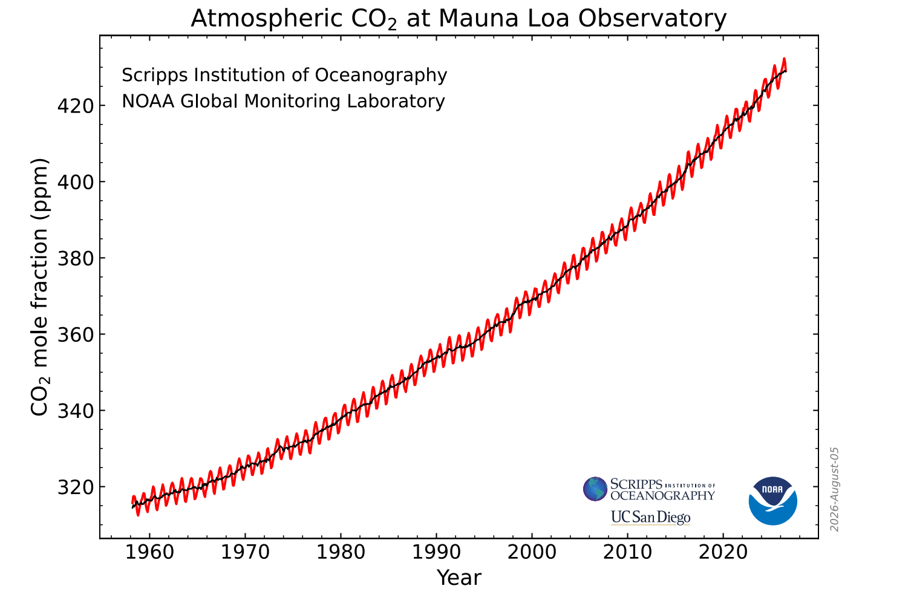
The Hockey Stick
Long-term temperature reconstruction
- Established a historical condition and make contemporary departure visually unmistakable.
- The “Hockey Stick” graph became a central icon in the climate wars. (Presented via IPCC 2001 Report.)
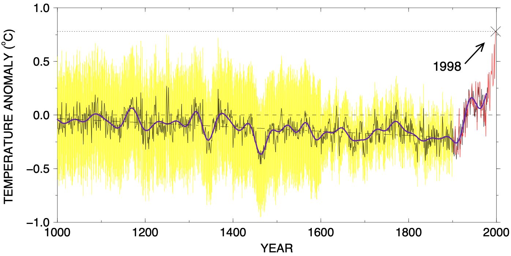
Complexity
Climate is produced through many interacting processes.
Scientific completeness can make those relationships visible.
but does more information always produce better understanding?
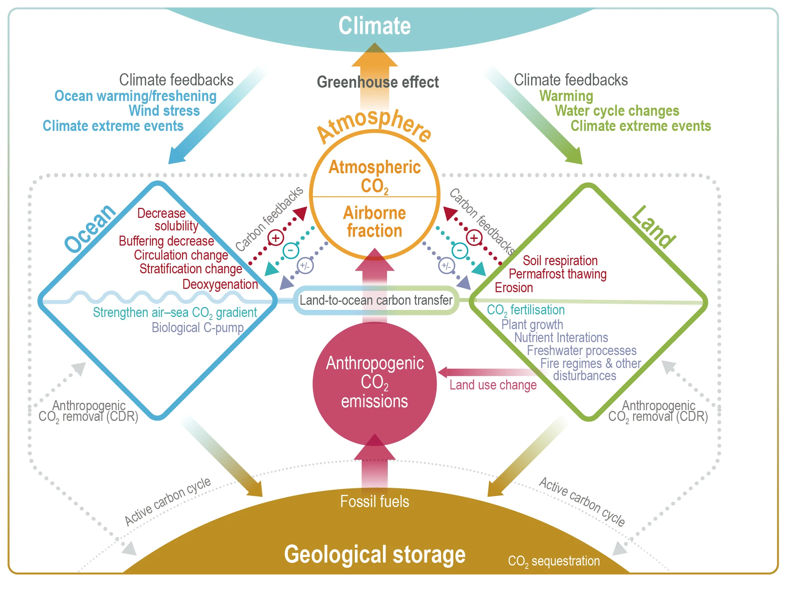
Climate Spiral | Ed Hawkins
Instead of explaining the mechanisms, the graphic communicates change.
Time becomes motion.
Temperature becomes distance.
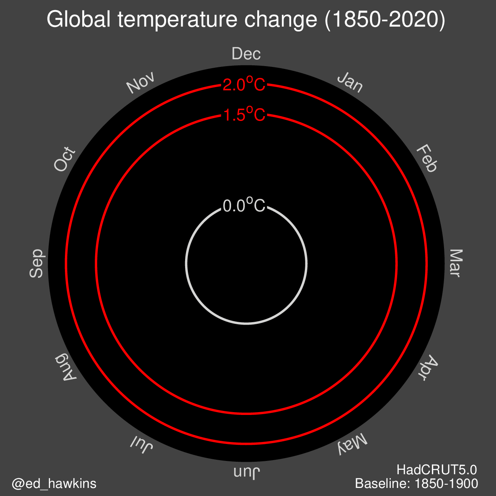
Warming Stripes | Ed Hawkins, 2018
Reduction: How little information is necessary?
One stripe = one year.
No geography | No axes | No numbers | No explanation
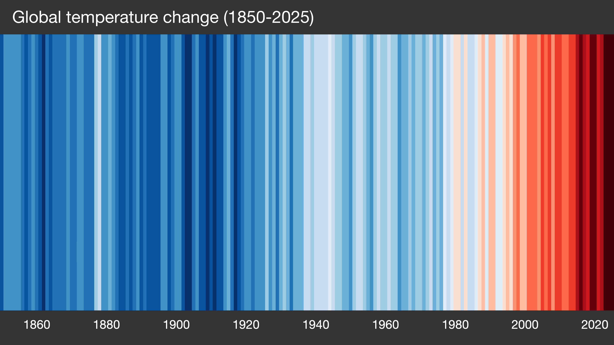
Planetary Boundaries
Organization: Multiple Processes + Multiple Thresholds > One Graphic System
How can complexity be organized without eliminating it?
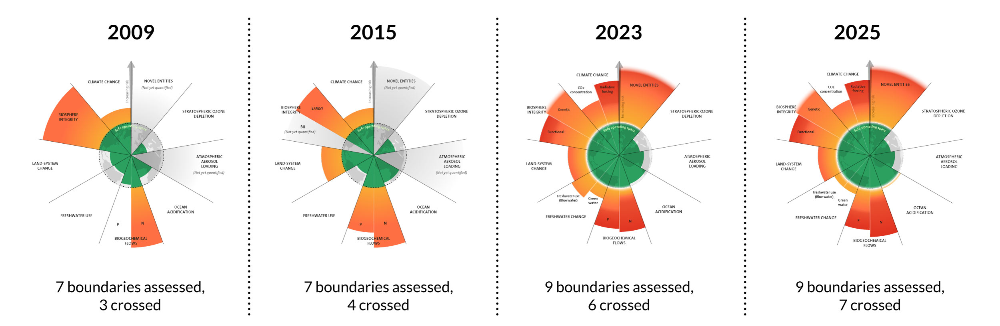
Design Challenge
Climate systems are difficult to perceive directly; how can design make their relationships visible and understandable?
| CONNECT | ACCUMULATE | COMPARE | EXPLAIN |
|---|---|---|---|
| relationships | change over time | difference | interaction |
| MOVE | REDUCE | ORGANIZE |
|---|---|---|
| sequence or motion | clarify | structure complexity |